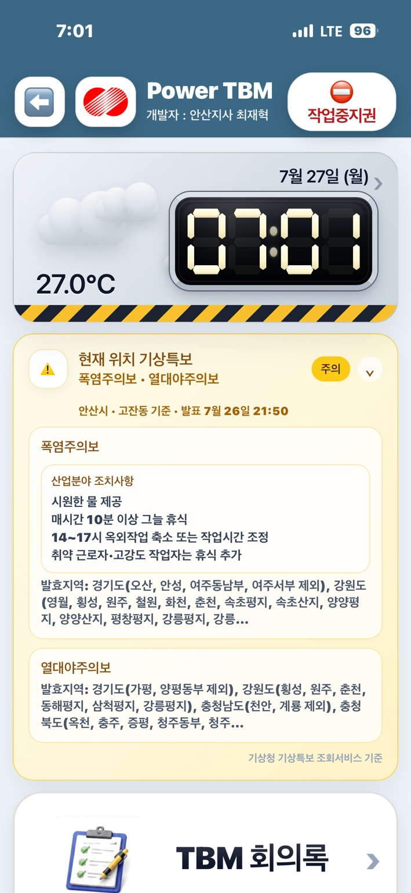
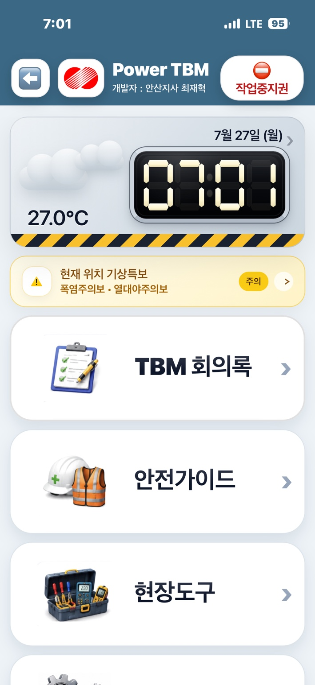
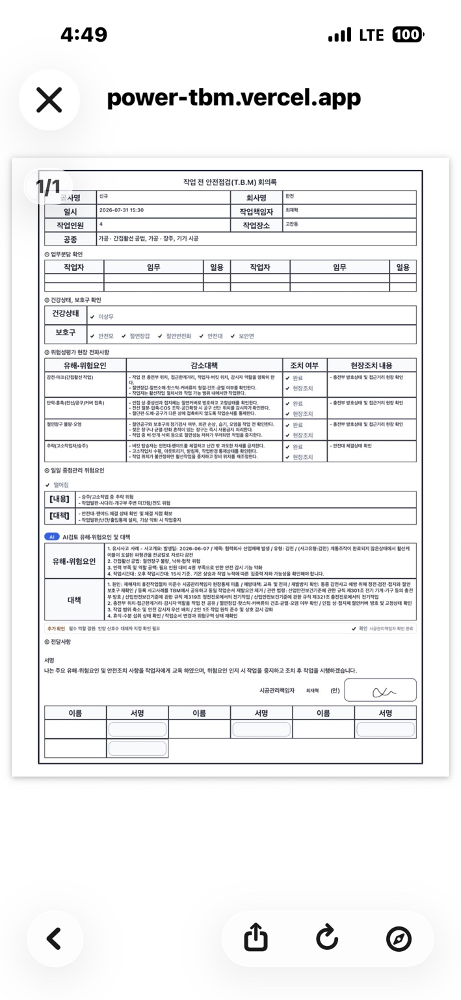
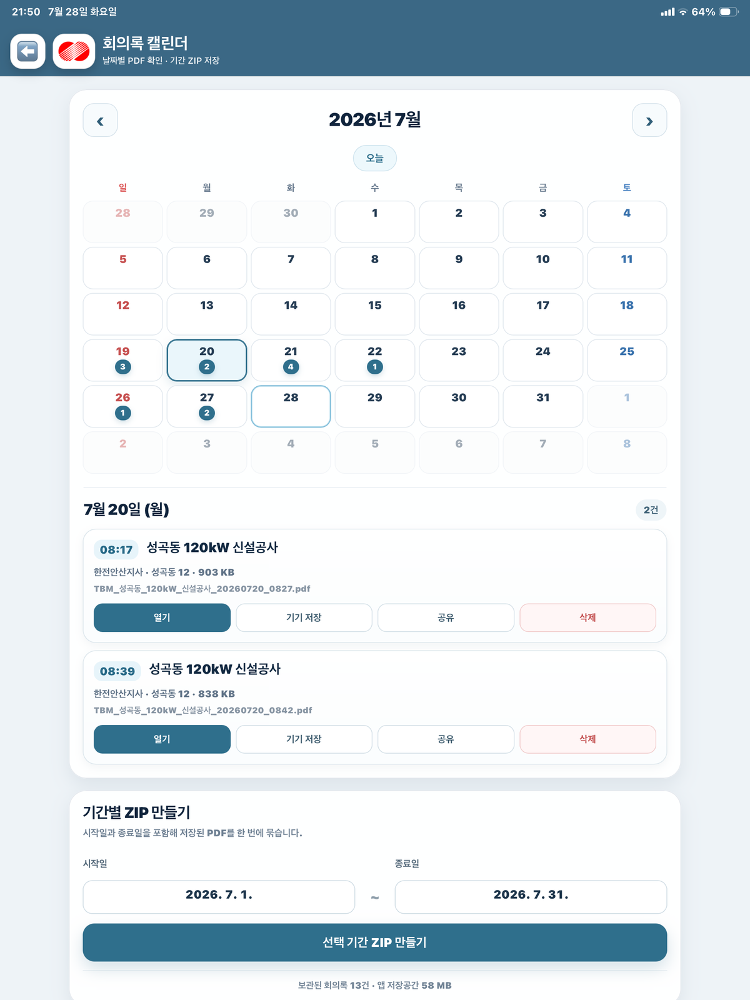
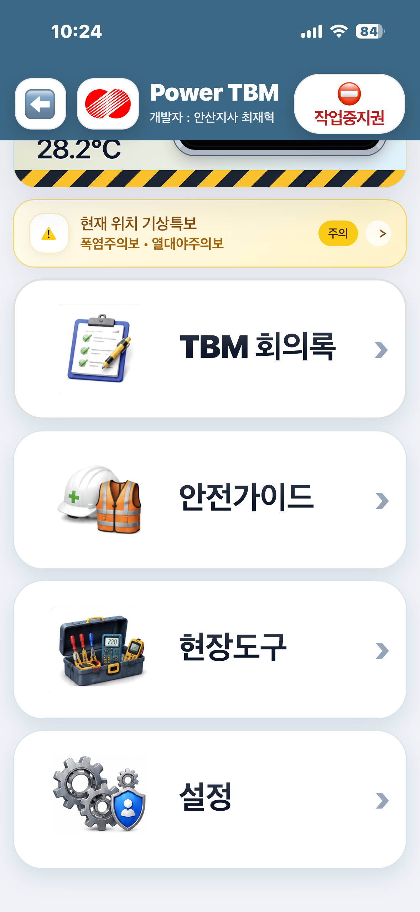
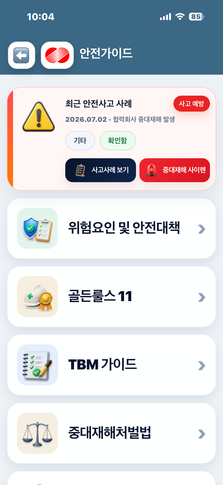
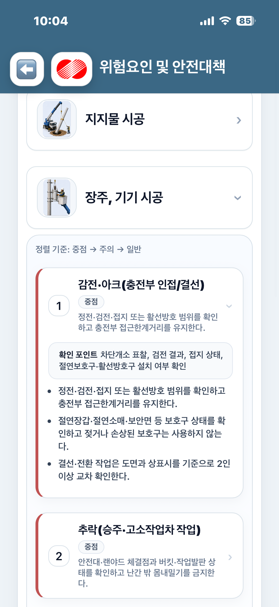
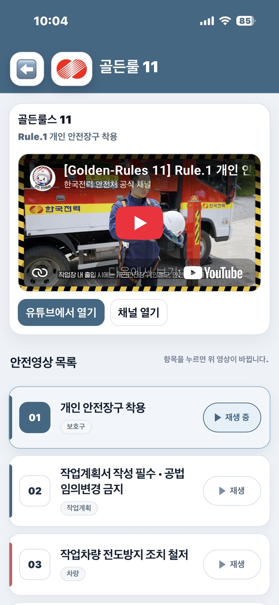
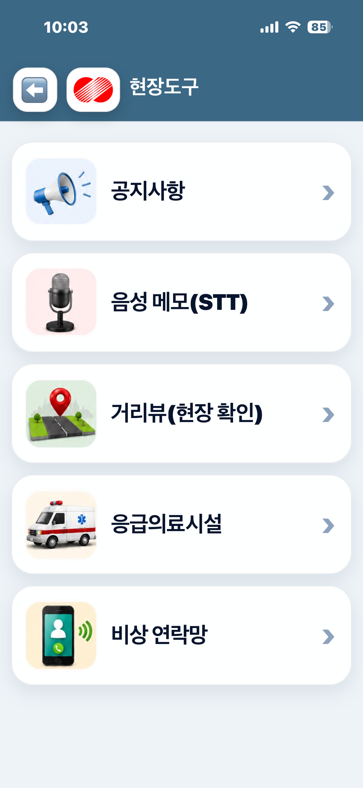
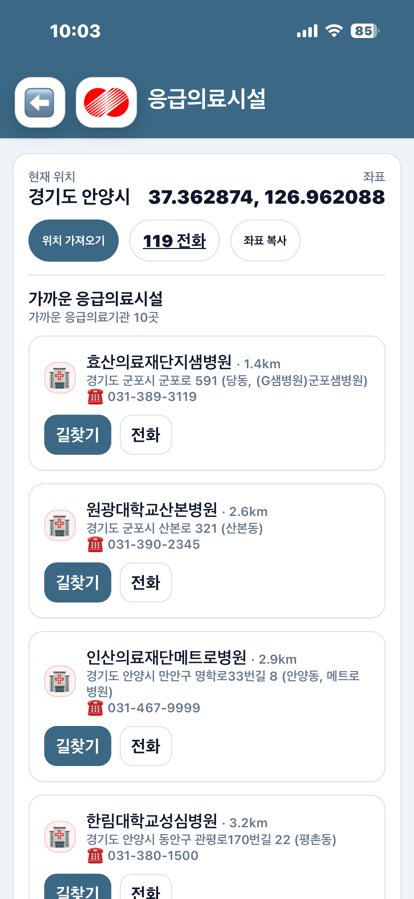

홈에서 오늘의 현장을 확인합니다
현재 날씨와 기상특보를 먼저 확인한 뒤 TBM 회의록, 안전가이드, 현장도구로 이동합니다.
- 무엇을 확인하나요?
- 현재 기온·특보, 작업중지권, 주요 메뉴
- 언제 사용하나요?
- 현장 도착 직후와 회의 시작 전
사용 팁
특보 카드의 펼치기 버튼을 누르면 산업분야 조치사항을 바로 볼 수 있습니다.
공종 선택부터 AI 안전검토, 전자서명과 PDF 원본 보관까지. 배전현장의 작업 전 안전회의를 하나의 흐름으로 연결합니다.

Power TBM 오프닝에 이어 기상정보, TBM 회의록, 안전가이드와 현장도구가 실제 앱 화면으로 자동 재생됩니다.










현재 날씨와 기상특보를 먼저 확인한 뒤 TBM 회의록, 안전가이드, 현장도구로 이동합니다.
특보 카드의 펼치기 버튼을 누르면 산업분야 조치사항을 바로 볼 수 있습니다.
공종을 정확히 선택하고, AI로 한 번 더 검토한 뒤, 서명된 원본을 남깁니다.
가공·지중·내선에서 당일 수행하는 공종을 함께 선택하면 관련 위험요인과 안전대책이 하나의 회의록으로 구성됩니다.


선택 공종에 기상, 유사사고, 작업자 상태를 더해 추가 확인이 필요한 위험요인과 안전대책을 제안합니다.
책임자와 작업자가 직접·QR·원격으로 서명하고, 완성 문서를 PDF 원본으로 확정해 캘린더에서 다시 찾습니다.
기상특보·태풍·레이더최근 안전사고 사례위험요인·골든룰스11응급의료시설 검색
제안 내용은 자동 확정되지 않으며 현장 책임자가 실제 작업조건과 대조합니다.
급박한 위험이나 조건 변화가 있으면 문서보다 작업중지와 안전조치를 먼저 시행합니다.
서명자·위험요인·현장조치를 확인한 뒤 PDF 원본을 확정해 보관합니다.
아닙니다. AI는 선택 공종과 현장정보를 바탕으로 추가 위험요인과 안전대책을 제안합니다. 실제 반영 여부와 최종 회의 내용은 현장 책임자가 확인해 결정합니다.
가능합니다. 당일 함께 수행하는 공종을 복수 선택하면 관련 위험요인을 한 회의 흐름으로 모아 확인할 수 있습니다.
현장에서 직접 서명하거나, 통신이 가능한 경우 카카오톡 링크와 QR을 이용해 원격으로 서명할 수 있습니다. PDF 확정 전 서명 상태를 반드시 확인하세요.
 모바일로 바로 열기
카메라로 QR코드를 스캔하세요
모바일로 바로 열기
카메라로 QR코드를 스캔하세요